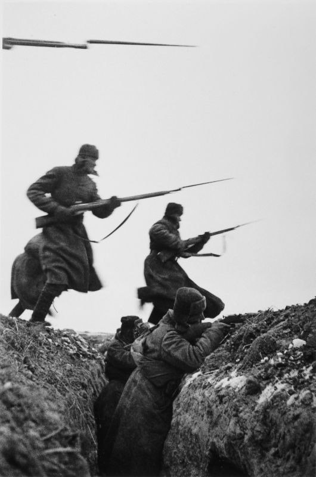
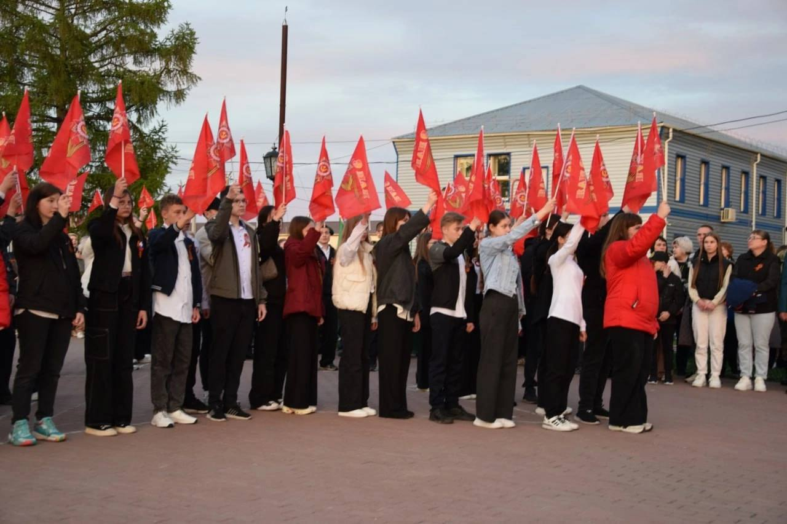
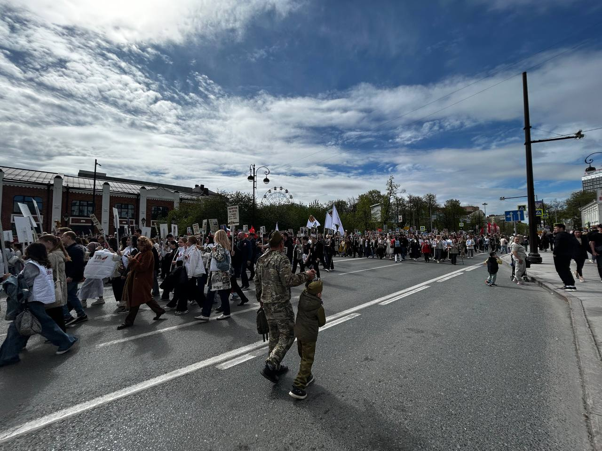
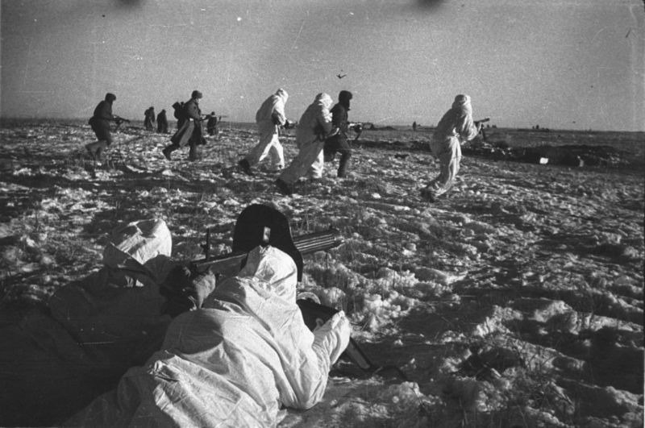
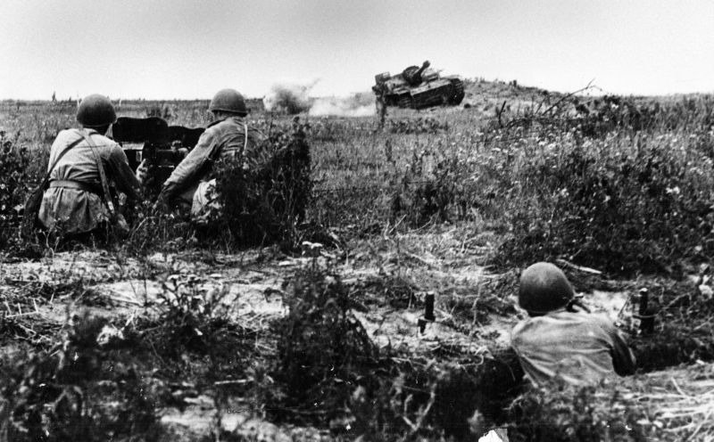
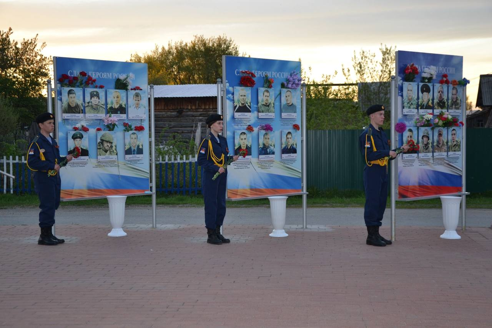
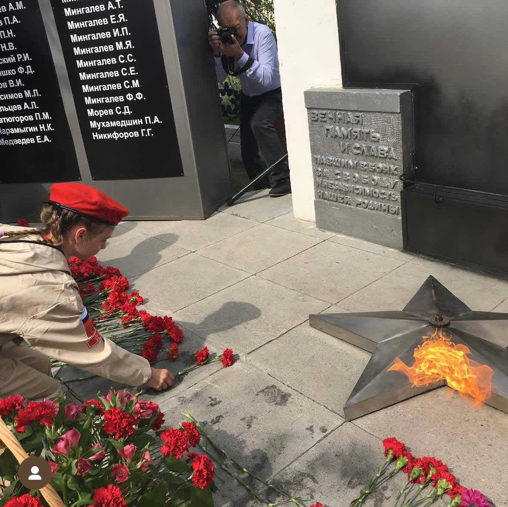
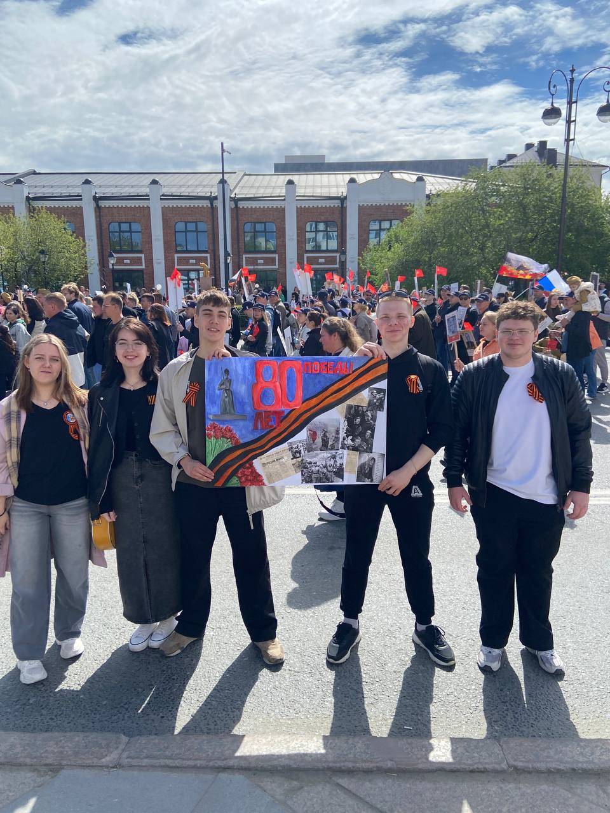
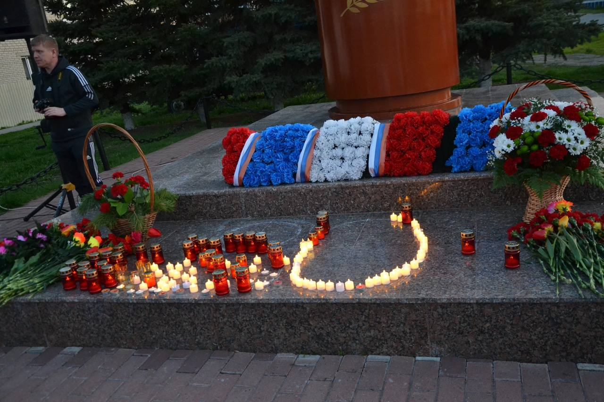

В ПАМЯТЬ О ПОБЕДЕ
1941-1945
Главная
Хронология
Мемориал
Галерея
Статистика
Опрос
О проекте
Галерея Памяти
Фотографии и изображения, в честь 80-летия со дня Великой Победы

Фотография с военнослужащим

Участие студентов

Бессмертный полк

Бессмертный полк

Фотография у памятника

Вознесение цветов героям России

Вечный огонь

Участники проекта с плакатом

Вознесение цветов